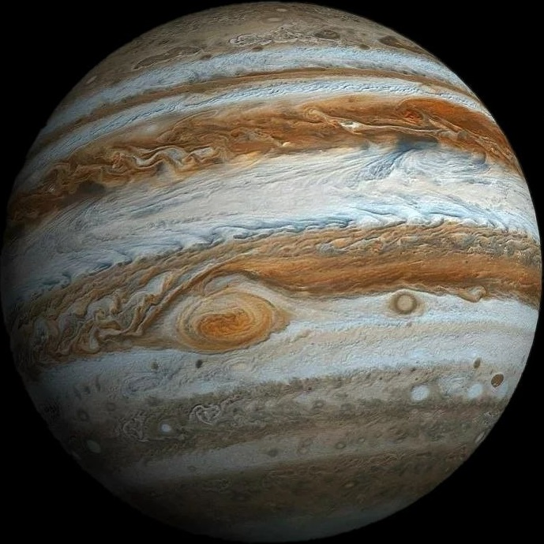

Jupiter is the fifth planet from the Sun and the largest planet in the Solar System. It is a gas giant mainly composed of hydrogen and helium. Jupiter is so massive that more than 1,300 Earths could fit inside it.
One of Jupiter’s most famous features is the Great Red Spot, a giant storm that has existed for hundreds of years. Jupiter has many moons, including Ganymede, Europa, Io, and Callisto. Ganymede is the largest moon in the Solar System, while Europa may contain an underground ocean.
Jupiter has a very strong magnetic field and faint rings around it. Its powerful gravity helps protect the inner planets by attracting or deflecting comets and asteroids. Scientists continue studying Jupiter to learn more about giant planets and the formation of the Solar System.
Jupiter is famous for its enormous storm called the Great Red Spot, which has existed for hundreds of years. This storm is much larger than Earth and produces extremely strong winds. Because Jupiter is a gas giant, it does not have a solid surface like Earth. The planet is mainly made of hydrogen and helium, the same elements found in the Sun.
Jupiter has dozens of moons, including four large moons discovered by Galileo Galilei in 1610. Some of these moons, such as Europa, may contain oceans beneath their icy surfaces. Scientists are especially interested in Europa because it could possibly support microscopic life. Jupiter’s strong gravity also helps protect the inner planets by attracting many asteroids and comets away from them.
